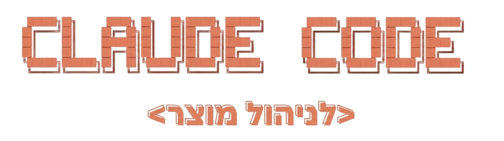

Yaniv Yaakubovich
Product Manager & AI Workshop Facilitator
AI-SHIPR · A product operating model in Obsidian + Claude Code
Speed without structure resets. Power without a model does not compound.
You already know how to prompt. This session gives you a system to plug those prompts into.
A Product Operating System built inside Obsidian and Claude Code. Not a note-taking system. Not a prompt library. A repeatable way your product brain shows up in AI, every sprint.
You see the Claude Code prompt > in your terminal. Type "hello" and get a response.
It's your product memory. All your strategic bets, initiatives, open hypotheses live here as plain text files. Claude Code reads and writes them. Obsidian lets you see and edit them.
Obsidian shows the AI-SHIPR folder on the left sidebar — AND — you have Claude Code running in a terminal pointed at the same folder.
Hero skills — the 8 you'll use first:
All 21 skills:
One command syncs your Figma file directly into AI-SHIPR.
Requires a free Figma Personal Access Token · Setup: 2 minutes · Instructions in I-Information/Integrations/Figma/README.md
Activate in Settings.md → change team_mode: solo to team_mode: lead
World's largest language learning app. 40M+ daily users. Freemium model. Streak mechanics as the core retention driver.
39% of users break their streak in 30 days · 23% opt out of push notifications · D7 retention flat at 38%
You are the PM. The system is already loaded with their context. The agents know the product.
This is what a system looks like after 2 weeks of real PM work.
Duolingo is the context. Your system is the engine. Let's go.
Morning brief → New idea intake → 1:1 prep
It's Monday morning. You want to know where things stand — what's active, what needs attention, what decisions are open.
Type this in Claude Code:
A stakeholder messages you: "We should add a team dashboard to the product." This happens 5 times a week. Usually it takes 30 minutes to figure out if it's worth pursuing.
Paste the new idea playbook + add the message:
Manager 1:1 in an hour. You have 5 active initiatives and 3 open decisions. You need an agenda that puts decisions first — not status updates.
Run the 1:1 prep playbook:
Agenda-writing from scratch (15–20 min) → 2 minutes. Decisions first, not status. The system read your initiatives and found the open calls.
This was the example product. This same system will run on your real product in 5 days.
The strongest PMs in the next few years won't be the ones who used AI the most. They'll be the ones who built operating models. This is what that looks like. And you just installed it.
Not a smarter prompt. Not a better template. A system that remembered my product across sessions — and brought structured thinking to the surface exactly when I needed it.
AI-SHIPR is what I built for myself. It changed how I make calls. It organized how I run my day. It made me a more deliberate PM.
The workshop is 95 minutes. But the system it installs has been years in the making.
1. Fill in your product context files today
2. Run morning brief tomorrow morning
3. Use new idea intake on the next stakeholder request
· Half-Sprint Guide — in your starter kit
· verve-pm.com — workshop info
· Reach out if you get stuck
A repeatable way your product brain shows up in AI, every sprint.
That's what you installed today. Now go use it.